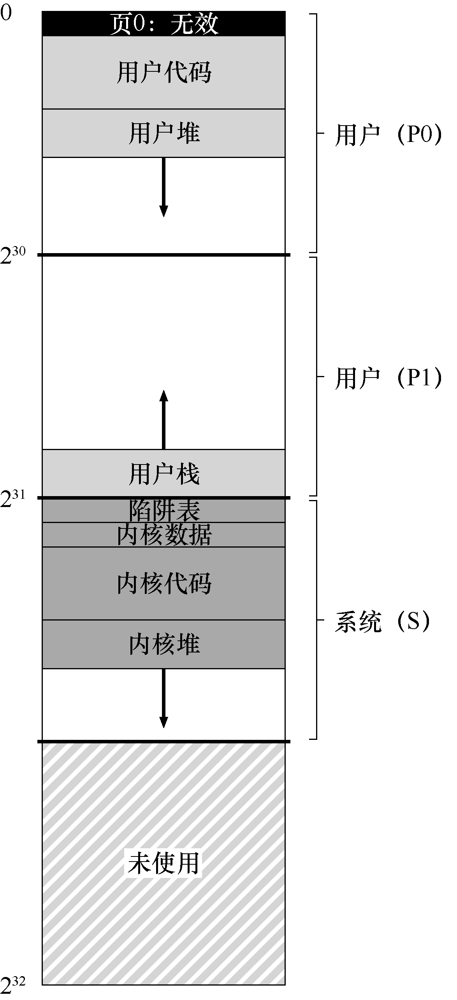

在我们结束对虚拟内存的研究之前，让我们仔细研究一下VAX/VMS 操作系统[LL82]的虚拟内存管理器，它特别干净漂亮。本章将讨论该系统，说明如何在一个完整的内存管理器中，将先前章节中提出的一些概念结合在一起。
23.1 背景¶
数字设备公司（DEC）在20 世纪70 年代末推出了VAX-11 小型机体系结构。在微型计算机时代，DEC 是计算机行业的一个大玩家。遗憾的是，一系列糟糕的决定和个人计算机的出现慢慢（但不可避免地）导致该公司走向倒闭[C03]。该架构有许多实现，包括VAX-11/780 和功能较弱的VAX-11/750。
该系统的操作系统被称为VAX/VMS（或者简单的VMS），其主要架构师之一是Dave Cutler，他后来领导开发了微软Windows NT [C93]。VMS 面临通用性的问题，即它将运行在各种机器上，包括非常便宜的VAXen（是的，这是正确的复数形式），以及同一架构系列中极高端和强大的机器。因此，操作系统必须具有一些机制和策略，适用于这一系列广泛的系统（并且运行良好）。
关键问题：如何避免通用性“魔咒”
操作系统常常有所谓的“通用性魔咒”问题，它们的任务是为广泛的应用程序和系统提供一般支持。其根本结果是操作系统不太可能很好地支持任何一个安装。VAX-11 体系结构有许多不同的实现。那么，如何构建操作系统以便在各种系统上有效运行？
附带说一句，VMS 是软件创新的很好例子，用于隐藏架构的一些固有缺陷。尽管操作系统通常依靠硬件来构建高效的抽象和假象，但有时硬件设计人员并没有把所有事情都做好。在VAX 硬件中，我们会看到一些例子，也会看到尽管存在这些硬件缺陷，VMS 操作系统如何构建一个有效的工作系统。
23.2 内存管理硬件¶
VAX-11 为每个进程提供了一个32 位的虚拟地址空间，分为512 字节的页。因此，虚拟地址由23 位VPN 和9 位偏移组成。此外，VPN 的高两位用于区分页所在的段。因此，如前所述，该系统是分页和分段的混合体。
地址空间的下半部分称为“进程空间”，对于每个进程都是唯一的。在进程空间的前半部分（称为P0）中，有用户程序和一个向下增长的堆。在进程空间的后半部分（P1），有向上增长的栈。地址空间的上半部分称为系统空间（S），尽管只有一半被使用。受保护的操作系统代码和数据驻留在此处，操作系统以这种方式跨进程共享。
VMS 设计人员的一个主要关注点是VAX 硬件中的页大小非常小（512 字节）。由于历史原因选择的这种尺寸，存在一个根本性问题，即简单的线性页表过大。因此，VMS 设计人员的首要目标之一是确保VMS 不会用页表占满内存。
系统通过两种方式，减少了页表对内存的压力。首先，通过将用户地址空间分成两部分，VAX-11 为每个进程的每个区域（P0 和P1）提供了一个页表。因此，栈和堆之间未使用的地址空间部分不需要页表空间。基址和界限寄存器的使用与你期望的一样。一个基址寄存器保存该段的页表的地址，界限寄存器保存其大小（即页表项的数量）。
其次，通过在内核虚拟内存中放置用户页表（对于P0 和P1，因此每个进程两个），操作系统进一步降低了内存压力。因此，在分配或增长页表时，内核在段S 中分配自己的虚拟内存空间。如果内存受到严重压力，内核可以将这些页表的页面交换到磁盘，从而使物理内存可以用于其他用途。
将页表放入内核虚拟内存意味着地址转换更加复杂。例如，要转换P0 或P1 中的虚拟地址，硬件必须首先尝试在其页表中查找该页的页表项（该进程的P0 或P1 页表）。但是，在这样做时，硬件可能首先需要查阅系统页表（它存在于物理内存中）。随着地址转换完成，硬件可以知道页表页的地址，然后最终知道所需内存访问的地址。幸运的是，VAX 的硬件管理的TLB 让所有这些工作更快，TLB 通常（很有可能）会绕过这种费力的查找。
23.3 一个真实的地址空间¶
研究VMS 有一个很好的方面，我们可以看到如何构建一个真正的地址空间（见图23.1）。到目前为止，我们一直假设了一个简单的地址空间，只有用户代码、用户数据和用户堆，但正如我们上面所看到的，真正的地址空间显然更复杂。
补充：为什么空指针访问会导致段错误
你现在应该很好地理解一个空指针引用会发生什么。通过这样做，进程生成了一个虚拟地址0：
int *p = NULL; // set p = 0
*p = 10; // try to store value 10 to virtual address 0
硬件试图在TLB 中查找VPN（这里也是0），遇到TLB 未命中。查询页表，并且发现VPN 0 的条目被标记为无效。因此，我们遇到无效的访问，将控制权交给操作系统，这可能会终止进程（在UNIX 系统上，会向进程发出一个信号，让它们对这样的错误做出反应。但是如果信号未被捕获，则会终止进程）。
例如，代码段永远不会从第0 页开始。相反，该页被标记为不可访问，以便为检测空指针（null-pointer）访问提供一些支持。因此，设计地址空间时需要考虑的一个问题是对调试的支持，这正是无法访问的零页所提供的。

图23.1 VAX / VMS 地址空间
也许更重要的是，内核虚拟地址空间（即其数据结构和代码）是每个用户地址空间的一部分。在上下文切换时，操作系统改变P0 和P1 寄存器以指向即将运行的进程的适当页表。但是，它不会更改S 基址和界限寄存器，并因此将“相同的”内核结构映射到每个用户的地址空间。
内核映射到每个地址空间，这有一些原因。这种结构使得内核的运转更轻松。例如，如果操作系统收到用户程序（例如，在write()系统调用中）递交的指针，很容易将数据从该指针处复制到它自己的结构。操作系统自然是写好和编译好的，无须担心它访问的数据来自哪里。相反，如果内核完全位于物理内存中，那么将页表的交换页切换到磁盘是非常困难的。如果内核被赋予了自己的地址空间，那么在用户应用程序和内核之间移动数据将再次变得复杂和痛苦。通过这种构造（现在广泛使用），内核几乎就像应用程序库一样，尽管是受保护的。
关于这个地址空间的最后一点与保护有关。显然，操作系统不希望用户应用程序读取或写入操作系统数据或代码。因此，硬件必须支持页面的不同保护级别才能启用该功能。VAX 通过在页表中的保护位中指定CPU 访问特定页面所需的特权级别来实现此目的。因此，系统数据和代码被设置为比用户数据和代码更高的保护级别。试图从用户代码访问这些信息，将会在操作系统中产生一个陷阱，并且（你猜对了）可能会终止违规进程。
23.4 页替换¶
VAX 中的页表项（PTE）包含以下位：一个有效位，一个保护字段（4 位），一个修改（或脏位）位，为OS 使用保留的字段（5 位），最后是一个物理帧号码（PFN）将页面的位置存储在物理内存中。敏锐的读者可能会注意到：没有引用位（no reference bit）！因此，VMS 替换算法必须在没有硬件支持的情况下，确定哪些页是活跃的。
开发人员也担心会有“自私贪婪的内存”（memory hog）——一些程序占用大量内存，使其他程序难以运行。到目前为止，我们所看到的大部分策略都容易受到这种内存的影响。例如，LRU 是一种全局策略，不会在进程之间公平分享内存。
分段的FIFO¶
为了解决这两个问题，开发人员提出了分段的FIFO（segmented FIFO）替换策略[RL81]。想法很简单：每个进程都有一个可以保存在内存中的最大页数，称为驻留集大小（Resident Set Size，RSS）。每个页都保存在FIFO 列表中。当一个进程超过其RSS 时，“先入”的页被驱逐。FIFO 显然不需要硬件的任何支持，因此很容易实现。
正如我们前面看到的，纯粹的FIFO 并不是特别好。为了提高FIFO 的性能，VMS 引入了两个二次机会列表（second-chance list），页在从内存中被踢出之前被放在其中。具体来说，是全局的干净页空闲列表和脏页列表。当进程P 超过其RSS 时，将从其每个进程的FIFO 中移除一个页。如果干净（未修改），则将其放在干净页列表的末尾。如果脏（已修改），则将其放在脏页列表的末尾。
如果另一个进程Q 需要一个空闲页，它会从全局干净列表中取出第一个空闲页。但是，如果原来的进程P 在回收之前在该页上出现页错误，则P 会从空闲（或脏）列表中回收，从而避免昂贵的磁盘访问。这些全局二次机会列表越大，分段的FIFO 算法越接近LRU [RL81]。
页聚集¶
VMS 采用的另一个优化也有助于克服VMS 中的小页面问题。具体来说，对于这样的小页面，交换过程中的硬盘I/O 可能效率非常低，因为硬盘在大型传输中效果更好。为了让交换I/O 更有效，VMS 增加了一些优化，但最重要的是聚集（clustering）。通过聚集，VMS将大批量的页从全局脏列表中分组到一起，并将它们一举写入磁盘（从而使它们变干净）。聚集用于大多数现代系统，因为可以在交换空间的任意位置放置页，所以操作系统对页分组，执行更少和更大的写入，从而提高性能。
补充：模拟引用位
事实证明，你不需要硬件引用位，就可以了解系统中哪些页在用。事实上，在20 世纪80 年代早期，Babaoglu 和Joy 表明，VAX 上的保护位可以用来模拟引用位[BJ81]。其基本思路是：如果你想了解哪些页在系统中被活跃使用，请将页表中的所有页标记为不可访问（但请注意关于哪些页可以被进程真正访问的信息，也许在页表项的“保留的操作系统字段”部分）。当一个进程访问一页时，它会在操作系统中产生一个陷阱。操作系统将检查页是否真的可以访问，如果是，则将该页恢复为正常保护（例如，只读或读写）。在替换时，操作系统可以检查哪些页仍然标记为不可用，从而了解哪些页最近没有被使用过。
这种引用位“模拟”的关键是减少开销，同时仍能很好地了解页的使用。标记页不可访问时，操作系统不应太激进，否则开销会过高。同时，操作系统也不能太被动，否则所有页面都会被引用，操作系统又无法知道踢出哪一页。
23.5 其他漂亮的虚拟内存技巧¶
VMS 有另外两个现在成为标准的技巧：按需置零和写入时复制。我们现在描述这些惰性（lazy）优化。
VMS（以及大多数现代系统）中的一种懒惰形式是页的按需置零（demand zeroing）。为了更好地理解这一点，我们来考虑一下在你的地址空间中添加一个页的例子。在一个初级实现中，操作系统响应一个请求，在物理内存中找到页，将该页添加到你的堆中，并将其置零（安全起见，这是必需的。否则，你可以看到其他进程使用该页时的内容。），然后将其映射到你的地址空间（设置页表以根据需要引用该物理页）。但是初级实现可能是昂贵的，特别是如果页没有被进程使用。
利用按需置零，当页添加到你的地址空间时，操作系统的工作很少。它会在页表中放入一个标记页不可访问的条目。如果进程读取或写入页，则会向操作系统发送陷阱。在处理陷阱时，操作系统注意到（通常通过页表项中“保留的操作系统字段”部分标记的一些位），这实际上是一个按需置零页。此时，操作系统会完成寻找物理页的必要工作，将它置零，并映射到进程的地址空间。如果该进程从不访问该页，则所有这些工作都可以避免，从而体现按需置零的好处。
提示：惰性
惰性可以使得工作推迟，但出于多种原因，这在操作系统中是有益的。首先，推迟工作可能会减少当前操作的延迟，从而提高响应能力。例如，操作系统通常会报告立即写入文件成功，只是稍后在后台将其写入硬盘。其次，更重要的是，惰性有时会完全避免完成这项工作。例如，延迟写入直到文件被删除，根本不需要写入。
VMS有另一个很酷的优化（几乎每个现代操作系统都是这样），写时复制（copy-on-write，COW）。这个想法至少可以回溯到TENEX 操作系统[BB+72]，它很简单：如果操作系统需要将一个页面从一个地址空间复制到另一个地址空间，不是实际复制它，而是将其映射到目标地址空间，并在两个地址空间中将其标记为只读。如果两个地址空间都只读取页面，则不会采取进一步的操作，因此操作系统已经实现了快速复制而不实际移动任何数据。
但是，如果其中一个地址空间确实尝试写入页面，就会陷入操作系统。操作系统会注意到该页面是一个COW 页面，因此（惰性地）分配一个新页，填充数据，并将这个新页映射到错误处理的地址空间。该进程然后继续，现在有了该页的私人副本。
COW 有用有一些原因。当然，任何类型的共享库都可以通过写时复制，映射到许多进程的地址空间中，从而节省宝贵的内存空间。在UNIX 系统中，由于fork()和exec()的语义，COW 更加关键。你可能还记得，fork()会创建调用者地址空间的精确副本。对于大的地址空间，这样的复制过程很慢，并且是数据密集的。更糟糕的是，大部分地址空间会被随后的exec()调用立即覆盖，它用即将执行的程序覆盖调用进程的地址空间。通过改为执行写时复制的fork()，操作系统避免了大量不必要的复制，从而保留了正确的语义，同时提高了性能。
23.6 小结¶
现在我们已经从头到尾地复习整个虚拟存储系统。希望大多数细节都很容易明白，因为你应该已经对大部分基本机制和策略有了很好的理解。Levy 和Lipman [LL82]出色的（简短的）论文中有更详细的介绍。建议你阅读它，这是了解这些章节背后的资源来源的好方法。
在可能的情况下，你还应该通过阅读Linux 和其他现代系统来了解更多关于最新技术的信息。有很多原始资料，包括一些不错的书籍[BC05]。有一件事会让你感到惊讶：在诸如VAX/VMS 这样的较早论文中看到的经典理念，仍然影响着现代操作系统的构建方式。
参考资料¶
[BB+72]“TENEX, A Paged Time Sharing System for the PDP-10”Daniel G. Bobrow, Jerry D. Burchfiel, Daniel L. Murphy, Raymond S. Tomlinson Communications of the ACM,Volume 15, March 1972早期的分时操作系统，有许多好的想法来自于此。写时复制只是其中之一，在这里可以找到现代系统许多其他方面的灵感，包括进程管理、虚拟内存和文件系统。
[BJ81]“Converting a Swap-Based System to do Paging in an Architecture Lacking Page-Reference Bits”Ozalp Babaoglu and William N. Joy SOSP ’81, Pacific Grove, California, December 1981关于如何利用机器内现有的保护机制来模拟引用位的巧妙构思。这个想法来自Berkeley 的小组，他们正在致力于开发他们自己的UNIX 版本，也就是所谓的伯克利系统发行版，或称为BSD。该团队在UNIX 的发展中有很大的影响力，包括虚拟内存、文件系统和网络方面。
[BC05]“Understanding the Linux Kernel (Third Edition)”Daniel P. Bovet and Marco Cesati O’Reilly Media, November 2005关于Linux 的众多图书之一。它们很快就会过时，但许多基础知识仍然存在，值得一读。
[C03]“The Innovator’s Dilemma”Clayton M. Christenson Harper Paperbacks, January 2003一本关于硬盘驱动器行业的精彩图书，还涉及新的创新如何颠覆现有的技术。对于商科和计算机科学家来说，这是一本好书，提供了关于大型成功的公司如何完全失败的洞见。
[C93]“Inside Windows NT”Helen Custer and David Solomon Microsoft Press, 1993这本关于Windows NT 的书从头到尾地解释了系统，内容过于详细，你可能不喜欢。但认真地说，它是一本相当不错的书。
[LL82]“Virtual Memory Management in the VAX/VMS Operating System”Henry M. Levy, Peter H. Lipman IEEE Computer, Volume 15, Number 3 (March 1982)这是本章的大部分原始材料来源，它简洁易读。尤其重要的是，如果你想读研究生，你需要做的就是阅读论文、工作，阅读更多的论文、做更多的工作，最后写一篇论文，然后继续工作。但它很有趣！
[RL81]“Segmented FIFO Page Replacement”Rollins Turner and Henry Levy SIGMETRICS ’81, Las Vegas, Nevada, September 1981一篇简短的文章，显示了对于一些工作负载，分段的FIFO 可以接近LRU 的性能。